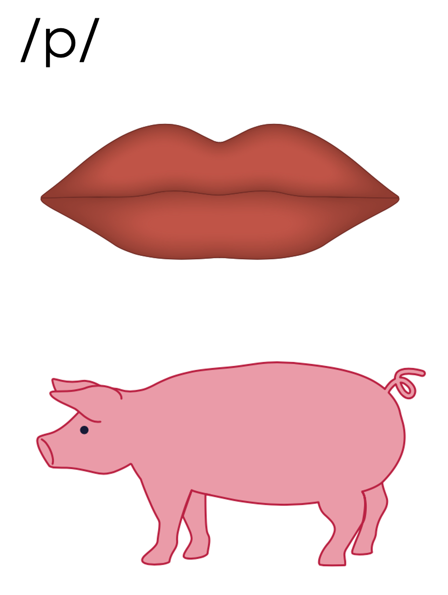
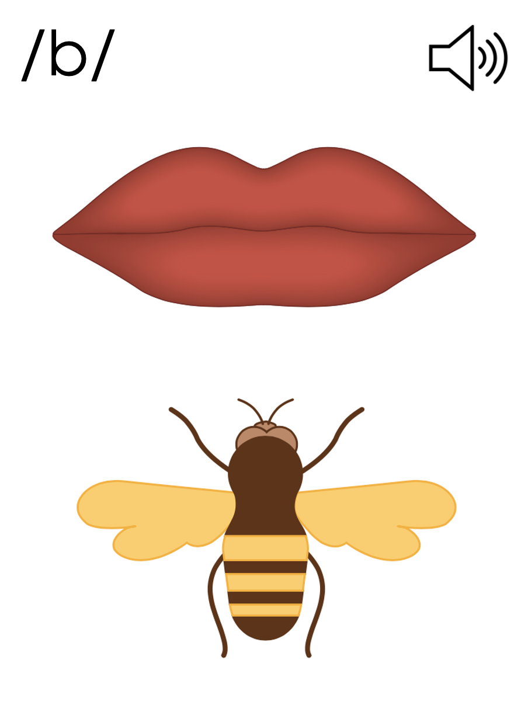
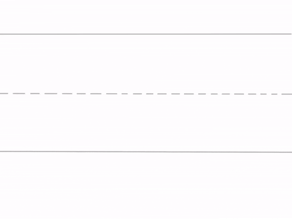
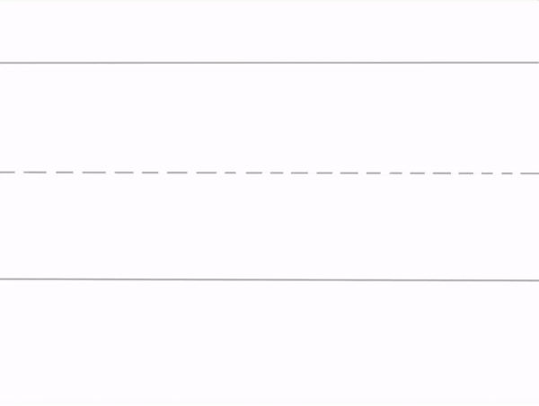
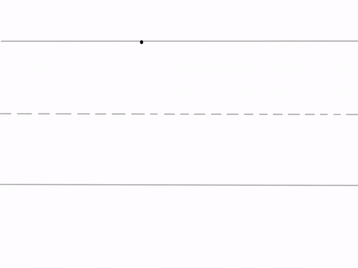

Getting Ready
Lesson C

ufliteracy.org


See UFLI Foundations Getting Ready lesson plans for sound wall activity.
The sound wall activity may be completed with either the digital sound wall slides provided here or physical sound wall cards displayed in your classroom.


Consonants
Introduction: Manner of Articulation
Consonants


/p/ (pig)
/b/ (bee)
Consonants


/t/ (tiger)
/d/ (dog)
Consonants


/k/ (kite)
/g/ (ghost)
Consonants


Consonants

/m/ (mouse)
Consonants


/n/ (nose)
Consonants


/ŋ/ (ring)
Consonants


See UFLI Foundations Getting Ready lesson plans for alphabet knowledge and letter formation activity.



Uppercase L gif

Uppercase F gif

Uppercase E gif


Insert brief reinforcement activity and/or transition to next part of reading block.